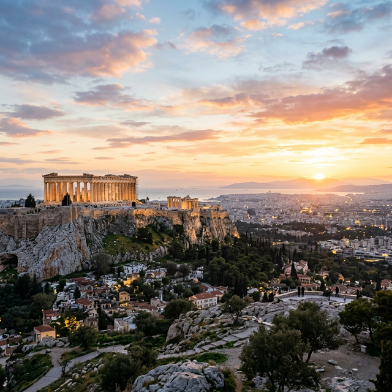
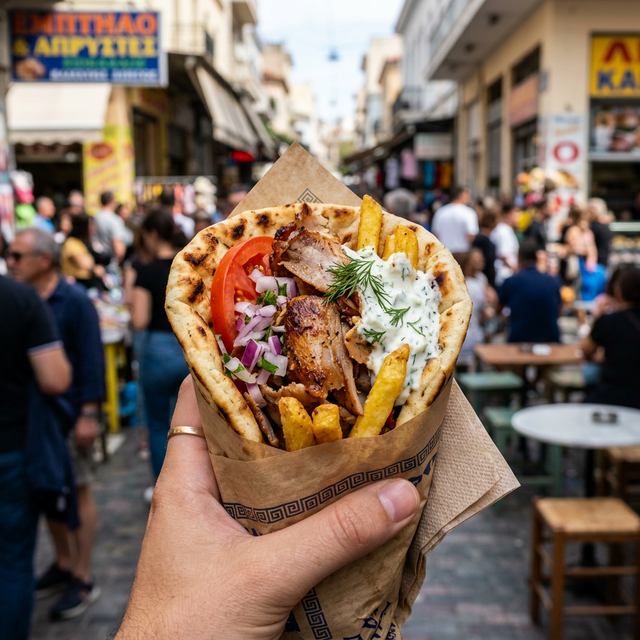
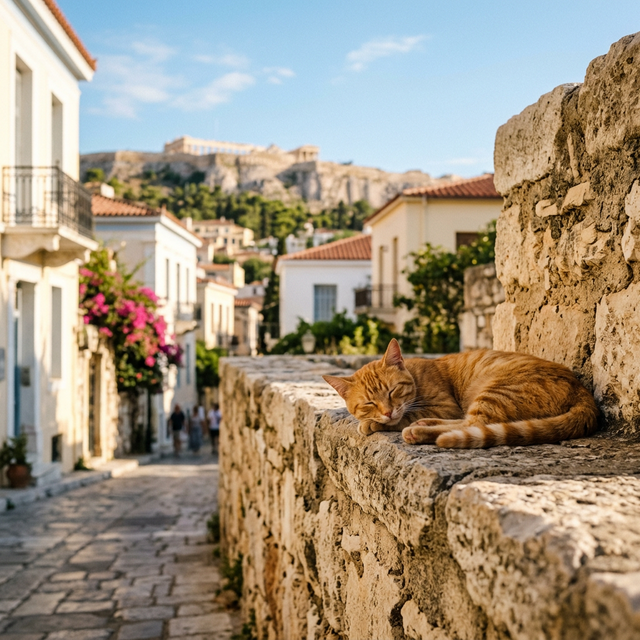

We have been fortunate enough to visit 49 countries over the past four years, but there's something about Athens that just hits differently. This city isn't just a destination, it's where Western civilization as we know it basically began. Walking around Athens, you're literally surrounded by ruins and temples that are over 2,000 years old, and somehow they're just casually sitting there among modern cafes and street vendors selling gyros.
We spent a few days in Athens and fell completely in love with it. The history, the food, the culture, and honestly, the absolutely massive population of street cats (more on that later). It's one of our favorite historical trips we've ever done, and that's saying something when we've been to places like Rome, Egypt, and Mexico.
What Actually is Athens?
Before I get into what we did, let me give you a bit of context about Athens itself, because understanding what this city represents makes visiting it so much more meaningful.
Athens is the capital of Greece and has been continuously inhabited for over 3,400 years, making it one of the oldest cities in the world. But it's not just old, it's historically significant in a way that very few places are. This is where democracy was born. This is where philosophy, drama, and Western political thought all took shape. The Acropolis, which dominates the city skyline, was the center of ancient Athens and has been standing there since the 5th century BC.
The city has been through absolutely everything. Ancient glory under Pericles, conquest by the Romans, Byzantine rule, Ottoman occupation, liberation, World War II, military dictatorship, and now it's a vibrant modern European capital. Walking around Athens, you can see all these layers of history stacked on top of each other. A 2,500-year-old temple next to a Byzantine church next to an Ottoman mosque next to a modern metro station. It's genuinely fascinating.
Today, Athens is home to about 3.7 million people in the greater metropolitan area, and it sits in the Attica region of Greece, looking out over the Saronic Gulf. The climate is Mediterranean, which means hot, dry summers and mild winters. We visited in March, and the weather was absolutely perfect for walking around and exploring without melting.
Getting to Athens and Around the City
We flew into Athens International Airport with EasyJet. The flights cost us around £180-240 return (we can't quite remember the exact amount, but somewhere in that range). Athens is really well connected to the UK and most of Europe, so flights are usually pretty affordable if you book in advance.
Getting from the Airport to the City:
We took the metro from the airport straight into the city center. It's the blue line (Line 3) and takes about 40 minutes to reach Syntagma Square, which is right in the heart of Athens. The ticket costs €9 per person (or €18 for two), and it's honestly the easiest way into the city.
Taxis are also available and cost around €38-50, but the metro is way more straightforward and saves you money.
Once you're in Athens, the metro system is brilliant for getting around. A single ticket costs €1.20 and is valid for 90 minutes. We mostly walked everywhere because Athens is surprisingly compact and walkable, but the metro is there if you need it.
Where We Stayed: Hotel Marina
We stayed at Hotel Marina and paid £91.16 for our stay. The location was decent for exploring the city, nothing fancy but clean, comfortable, and exactly what we needed. Athens accommodation is generally pretty affordable, especially if you're not fussed about luxury and just want a base to explore from.
The Acropolis: The Main Event

Right, let's talk about the Acropolis because this is what you come to Athens for. It's the ancient citadel sitting on a rocky hill above the city, home to the Parthenon and several other ancient temples. It's absolutely iconic, and seeing it in person is genuinely breathtaking.
Getting to the top involves a bit of a climb. It's uphill on uneven ancient stone paths, so wear comfortable shoes. The views from the top are incredible. You can see all of Athens spread out below you, and standing among these 2,500-year-old temples with that view is one of those travel moments that just stays with you.
"Standing among these 2,500-year-old temples with that view is one of those travel moments that just stays with you."
We paid €20 per person for entry to the Acropolis (prices vary by season). The ticket also covers entry to several other ancient sites including the Ancient Agora, Roman Agora, and Temple of Olympian Zeus, so it's actually really good value.
The Acropolis Museum: Where We Got Emotional
After the Acropolis itself, we went to the Acropolis Museum, which is right at the base of the hill. Entry is €15 per person, and it's absolutely worth it. The museum is stunning—modern, airy, and with floor-to-ceiling windows looking out at the Acropolis.
One of the highlights is seeing the Caryatids up close. These are the female figures that were used as columns on the Erechtheion temple. But standing there looking at the five sisters with an empty space where the sixth should be is genuinely heartbreaking. That sixth sister is in the British Museum in London. Greece has been asking for these artifacts back for decades, and honestly, seeing the context they were ripped from makes a strong case for their return.
The Food: Gyros, Souvlaki, and Everything Else

Greek food is unreal, and Athens is the place to eat it. We absolutely stuffed ourselves with gyros, souvlaki, and every other Greek dish we could find.
- Gyros - Meat wrapped in pita with tomatoes, onions, fries, and tzatziki. It costs about €3-4 and we had it every day.
- Souvlaki - Similar to gyros but the meat is on skewers.
- Moussaka - Rich, hearty layers of eggplant, minced meat, and béchamel.
- Greek Salad - Simple and fresh with high-quality feta.
- Baklava - Sweet, sticky pastry for dessert.
The Cats of Athens: Hannah's Heaven

Hannah absolutely loves cats, and Athens is absolutely full of them. Thousands of street cats live all over the city—sleeping on ruins, lounging in cafes, and wandering the Plaka.
We must have stopped to pet fifty different cats. They're part of what makes Athens charming. Just a quick tip: if you're going to interact with them, put food down rather than hand-feeding. Hannah learned that the hard way with a little scratch from a hungry kitten, but we weren't mad—it was our fault for hand-feeding!
Other Historical Sites and Temples to Visit
- Temple of Olympian Zeus - Massive temple dedicated to Zeus.
- Ancient Agora of Athens - The marketplace where Socrates and Plato once walked.
- Roman Agora - Featuring the fascinating Tower of the Winds.
- Panathenaic Stadium - Built entirely of marble for the first modern Olympics.
- Plaka Neighborhood - The old historical heart of Athens.
Athens Budget Breakdown: What It Actually Cost
Transport & Stay
- Flights: £180-240 for two
- Hotel Marina: £91.16
- Metro: £23 total
Activities & Food
- Acropolis Ticket: £34 for two
- Museum: £26 for two
- Food: £60-80 total
Final Thoughts: Would We Go Back?
100%. Athens is one of those cities we could visit again and again. If you love history, ancient civilizations, or just want to stand where democracy was born, Athens is essential. It absolute lives up to the hype. Plus, the cats. Don't forget the cats.